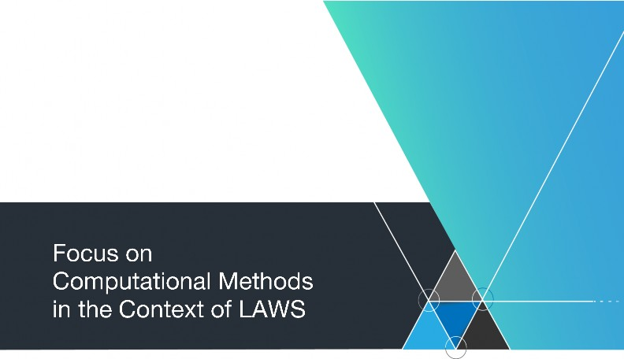

"Focus on" Report No. 2 November 2017
International Panel on the Regulation of Autonomous Weapons (iPRAW) coordinated by:
Stiftung Wissenschaft und Politik - German Institute for International and Security Affairs Ludwigkirchplatz 3-4
10179 Berlin, Germany
November 2017
This project is financially supported by the German Federal Foreign Office.
Setting and Objectives: The International Panel on the Regulation of Autonomous Weapons (iPRAW) was founded in March 2017. iPRAW is an independent group of experts from different nation states and scientific backgrounds. The panel will complete its work by the end of 2018.
The mission of iPRAW is to provide an independent source of information and consultation to the Group of Governmental Experts (GGE) within the framework of the United Nations CCW (Convention on Prohibitions or Restrictions on the Use of Certain Conventional Weapons Which May Be Deemed to Be Excessively Injurious or to Have Indiscriminate Effects) during the ongoing process toward a possible future regulation of LAWS (Lethal Autonomous Weapon Systems). This work includes, but is not limited to, the provision of expertise on the military, technical, legal, and ethical basis for practical and achievable policy initiatives regarding LAWS. The mandate of the CCW's open-ended GGE on LAWS will guide the work of iPRAW.
iPRAW seeks to prepare, support, and foster a frank and productive exchange among participants, culminating in perspectives on working definitions and recommendations on a potential regulation of LAWS for the CCW GGE. iPRAW is independent from the GGE and does not function in any official capacity regarding the CCW.
Funding, Organization, and Participants: iPRAW is financially supported by the German Federal Foreign Office. The views and findings of iPRAW do not reflect the official positions of the German government or any other government. Stiftung Wissenschaft und Politik - The German Institute for International and Security Affairs (SWP) and the Johns Hopkins University Applied Physics Laboratory (JHU APL) are jointly organizing the panel. The participants have been selected on the basis of their expertise and the perspectives they bring from a wide range of professional and regional contexts. iPRAW represents the diversity of views on the topic of autonomy in weapon systems. Its members have backgrounds in natural science, engineering, law, ethics, political science, and military operational analysis.
Scope: The panel acknowledges that LAWS may pose a number of considerable legal, ethical and operational challenges and that they might change the security environment in a fundamental way. The full potential of these weapon systems is yet unknown and a mutually agreed definition on LAWS does not exist.
In order to support the CCW GGE process, iPRAW will work on how LAWS should be defined as well as on suggesting possible approaches to regulation. The panel's working sessions will cover the following topics
state of technology and operations as well as existing definitions of LAWS
computational systems within the scope of LAWS
autonomy and human control
ethics, norms and public perception
risks and opportunities
IHL and other fields of law.
iPRAW will publish working documents on each of these topics and will, in addition, publish the panel's final recommendations aimed at informing the CCW process.
Procedure: The participants commit themselves to actively participate in and contribute to all meetings and the scientific dialogue in-between meetings. The panel will meet seven times over the course of two years, starting in March 2017. Each meeting will take two and a half days and will be hosted by SWP in Berlin. Papers with agreed upon recommendations on relevant issues will be drafted and published via the project's website (www.ipraw.org) in between meetings.
Communication and Publication: The participants discuss under the Chatham House Rule: participants are free to use the information received, but neither the identity nor the affiliation of the speaker(s,)nor that of any other participant, may be revealed. As a matter of confidentiality, photographs, video or audio recordings as well as all kinds of activities on social media are not allowed during iPRAW meetings.
The results of the panel discussions will be published. iPRAW members will strive to reach consensus on their recommendations and to reflect that in the panel's publications. Media inquiries with regard to official iPRAW positions should be directed to the steering group. Apart from that, the panel members are free to talk about their personal views on participation and the topics of the panel.
Learn more about iPRAW and its research topics on www.ipraw.org. Please direct your questions and remarks about the project to mail@ipraw.org.
Figure 1: Dynamic Targeting Cycle 15
The International Panel on the Regulation of Autonomous Weapons (iPRAW) is an independent, interdisciplinary group of scientists working on the issue of lethal autonomous weapon systems (LAWS). It aims to support the current debate within the UN Convention on Certain Conventional Weapons (CCW) with scientifically grounded information and recommendations for the potential regulation of LAWS. Defining LAWS is a critical element of the CCW debate and as such a major component of iPRAW's mission.
iPRAW publishes interim reports that each focus on different aspects or perspectives on LAWS. This report focuses on the underlying techniques behind what is popularly known as Artificial Intelligence (Al), and how they are relevant to
LAWS. Following the observations stated in the report, iPRAW
makes the following conclusions for aspects of a potential regulation of LAWS:
Conclusion 1: In general, the umbrella term of "Al" as applied to LAWS should be used with prudence and parsimony. To conduct a substantive discussion on the actual capacity and potential of
The unique judgement of human decision makers cannot be replaced due to inherent limitations of computational methods.
the technologies being considered in the context of LAWS, we recommend the adoption of the term "computationalmethods." Whenever possible, the specific method, or types of methods to be applied should be made transparent to help demystify the term "Al" and render clear what capability or function is actually being considered. This way the discussion can focus on the specific promises and limitations of the particular capability in question.
Conclusion 2: Our discussion shows the limitations of computational methods in the military field and highlights that they likely cannot replace the unique judgement of the human decision makers. Any complex computational systems consist of modular subsystems, each of which inherently has limitations and points of failure. Applying multiple computational systems across each step in a targeting cycle may result in cumulative failures that can be catastrophic and hard to anticipate. Any system that executes sequential processes, such as selecting and engaging targets,
can be subject to path dependencies where errors or decisions, in any step, can propagate and reverberate throughout the rest of the sequence.
Conclusion 3: The predictability of systems utilizing computational methods is ambivalent for two reasons. First, computational methods are capable of producing consistent results, but this does not mean the system is robust under all conditions. Two, they create a paradox at the tactical level because commanders require a level of reasonable predictability for operational, legal and ethical reasons, but that same system predictability can easily be exploited by cunning adversaries. An adversary that is able to exploit training data or obtain sufficient understanding of how LAWS will respond to specific inputs may be able to deceive these systems in ways that are unique to computational systems which is why they introduce a novel vulnerability.
Conclusion 4: The precautionary principle requires that actors take actions to prevent harm. As our conclusions so far indicate, there is uncertainty about how computational methods applied to weapons will address any number of variables humans must currently account for. Therefore, given these uncertainties that may occur in each step of the targeting cycle, and resulting cumulative errors, LAWS introduce a new risk for compliance with the precautionary principle.
These conclusions lead us to the following recommendations for a potential regulation of LAWS:
The amount of uncertainty in the environment and inputs that LAWS would have to deal with questions if (or to what extent) "decisions" leading to lethal force can be delegated to LAWS. Any regulation should carefully consider what decisions may be delegated and how human control can be implemented by design.
Related to the issue of delegation, a potential regulation should oblige the commander to exercise appropriate forethought on what she is committing the system to do, put appropriate boundaries on the system and mission, and exercise meaningful oversight during the mission. Those restrictions should be based in large parts on the complexity of the environment and performance characteristics of the system.
The outcomes from non-deterministic/probabilistic techniques challenge a straight forward prediction of the machine's actions. Therefore, any potential regulation should focus on the inherent limitations of these techniques and methods in order to identify circumstances necessary for a human operator to participate in the decision process.
Future iPRAW reports will continue to examine LAWS along the lines of these considerations.

The International Panel on the Regulation of Autonomous Weapons (iPRAW) is an independent, interdisciplinary group of scientists working on the issue of robotics in general, and lethal autonomous weapon systems (LAWS) specifically. It aims to support the current debate within the UN Convention on Certain
Conventional Weapons (CCW)1 with scientifically grounded
information and recommendations, looking at the potential regulation of LAWS from different angles. The various backgrounds and specializations of the iPRAW participants allow for different perspectives on military advantages, technological boundaries, and human-machine interaction. iPRAW strives to present its findings in consensus, but we will highlight the major threads of debate among the members if necessary.
This report focuses on the technology behind LAWS and although "Al" and autonomy are closely related, we will examine the term and concept of autonomy in the upcoming report (March 2018).
This report looks at the computational methods behind autonomous weapon systems, commonly referred to as Artificial Intelligence (Al). It is meant to clarify the terminology commonly used in the debate on LAWS, and analyze its implications by placing it within the context of how dynamic targeting decisions are made by militaries.
The report briefly introduces the technological basics, focusing on supervised and unsupervised machine learning and challenges inherent to these techniques. It progresses to assess their implications within the military targeting cycle. It illustrates that computational methods could be used in every step of the targeting cycle, but will need a well-informed human operator for outcomes that comply with IHL. The report concludes with four observations:
The complete title reads Convention on Prohibitions or Restrictions on the Use of Certain Conventional Weapons which may be Deemed to be Excessively Injurious or to have Indiscriminate Effects, concluded 1980, entered into force 1983.
the term "computational methods" is more appropriate than the term Artificial Intelligence in the discussion about LAWS;
the application of multiple computational systems across the targeting cycle may result in cumulative failures that can be catastrophic and hard to anticipate;
a predictable system is necessary for the compliance with IHL but decreases the robustness and increases the vulnerability to manipulation;
given the uncertainties that may occur in each step of the targeting cycle, and resulting cumulative errors, LAWS introduce a new risk for compliance with the precautionary principle.
Therefore iPRAW recommends that a potential regulation of LAWS should:
carefully consider what decisions may be delegated and how human control can be implemented by design;
oblige the commander to exercise appropriate forethought on what she is committing the system to do, put appropriate boundaries on the system and mission, and exercise meaningful oversight during the mission;
focus on the inherent limitations of these techniques and methods in order to identify circumstances necessary for a human operator to participate in the decision process.

ARTIFICIAL INTELLIGENCE: TERMINOLOGY, TECHNIQUES AND METHODS
Member States of the CCW will meet formally for the first time at the United Nations in Geneva on 13-17 November 2017. This meeting marks the beginning of the formal process of deliberations after three years of informal meetings. As prior deliberations of these meetings have circled around the technology and the concept of autonomy, Al is now at the center of the public attention due to the spread of its civilian applications. Therefore, it is fundamental to elucidate and properly understand the term Artificial Intelligence in general and in the context of LAWS.
The term "Artificial Intelligence" has become a catch-all term used in a technical sense to refer to a set of computational techniques. It is also used in a more colloquial sense to refer to hypothetical entities or future computational systems that approximate or exceed human intelligence, or have some set of properties associated with human intelligence. In this colloquial sense it is
sometimes used synonymously with general Al, strong Al, or
human-level Al, and features in discussions of the "singularity." In its technical sense, Al is often used for specific applications and techniques that capture the imagination, such as machine learning, automated reasoning or Deep Learning. Within the expert community, Al refers to a highly diverse set of computational techniques associated more by their disciplinary and research histories than by their computational or practical properties.
"Strong Al" may or may not become reality in the future. For now, "weak Al" poses enough technological, ethical, and legal challenges to be the focus of this report.
Fundamentally the various techniques that are used and explored under the banner of Al are applications of mathematical logic, advanced statistics, and other computational techniques. For this reason, iPRAW adopts the term "c omputational methods" to capture the broad range of these techniques. Computational methods, combined with the right enabling technology and hardware, are mainly applied to find
patterns, classify and categorize inputs, and produce sufficiently optimized courses of action in computationally efficient ways, according to specified goals.
TECHNIQUES & METHODS
There are many approaches within computational methods that reflect different schools of thought and techniques. A strict hierarchy of terms and techniques is impossible to describe, and any practical real-world system is
likely to involve multiple computational techniques employed at
various levels and in various subsystems of what are increasingly complex hybridized systems. However, several terms which are used frequently in this debate warrant clarification and demystification.
MACHINE LEARNING
Machine learning (ML) refers to a broad set of computational techniques that use statistical methods. The results of such computations are based on the data sets that they operate on, and this data can change, they are probabilistic and non-
The terms "Artificial Intelligence" and "machine learning" imply a deeper meaning behind the logical and statistical methods, which may lead to the false impression of intention and purpose. Therefore, this report uses the term "computational methods" when it refers to these techniques.
deterministic by nature. Moreover, the results are sensitive to the data such computations operate on, they are called "learning" or adaptive algorithms, though a better term would be "data-dr iven" as they do not really operate in the same manner as human learning.
Within ML, there are two broad categories of techniques, supervised learning and unsupervised learning. However, they do utilize statistics over datasets, but do so in a different manner.2
Unsupervised learning uses statistical techniques such as regression and clustering over datasets to produce simple mathematical functions that represent the salient features of large datasets. Regression tries to find a line or curve that "fits" a data series. Clustering techniques attempt to group data points into a number of sets according to given algorithmic procedure. The clusters are "learned" from a data set only in the sense that the boundaries between clusters can be treated as representations of "learned" categories. These algorithms are unsupervised in the sense that they receive no input from the user of the algorithm as to what the categories are or where the boundaries or lines might lie in the data.
More commonly discussed and associated with ML are supervised learning techniques. In supervised learning the user of the algorithm must create specialized sets of training and testing data. This data must be labelled with the desired category by the user for the algorithm. Various algorithms and data structures can be used to "learn" the labelled categories for given examples. These include neural networks and neural networks with many layers called Deep Learning. Once the categories are "learned" these statistical representations can be used to classify new examples. After "training" the algorithm on the training data set and using the labels to correct
2 A helpful publication with a focus on civilian application is Ben Buchanan, Taylor Miller,
Machine Learning for Policy Makers. What It Is and Why It Matters, June 2017.
or adapt the algorithm, it can be tested for reliability against a separate dataset, with hidden labels, called the test set. The performance of the algorithm on the test set can provide an indication of how well the algorithm has adapted to the data it trained on. However, the performance of the algorithm on further data, or real-world data, depends on how representative the training and test data sets are of the datasets in the application domain.
Trained algorithms can be "frozen" after they are trained, in what is called off-line learning. This is by far the most common type of machine learning. Data is used to train until a desired level of test performance is achieved, and then the system behaves in a deterministic manner in its application. Alternatively,
systems can be designed to adapt even after they are deployed
in what is called on-line learning. Such systems can be unpredictable and unstable, as their performance depends on unpredictable environmental data. Generally systems only use on-line learning in highly restricted and constrained ways, and they are not usually used in critical systems.
CHALLENGES OF MACHINE LEARNING
Adequate data is the key for a desirable outcomes of the learning process, which puts crucial value on the quality and quantity as well as the representativeness of the training data.
There are many known difficulties, challenges and problems with machine learning techniques, and statistical techniques more generally. A serious challenge for machine learning techniques is "overfitting" to the data, where the simple mathematical representations of the data fit too closely to the given data, and are not generalizable or practically useful. A similar difficulty is with algorithms finding local optimizations rather than global optimizations within the data. Neural networks, for instance, use techniques like gradient descent to seek out minimum cost points in the data, but may get stuck in a local minima and miss a nearby global minima. Many years of research have been devoted to addressing these problems, and while progress has been made, they are still issues that system designers must be wary of.
Another challenge facing data-driven techniques is getting big data and getting good data. Generally, programmers aim to design these techniques for a robust use. Robustness in this context describes the ability of a system to avoid unintended results independently from varying external conditions and data quality during operation. As robustness can be a priority in certain situations it may contradict predictability in general terms. In order to get robust results, machine learning algorithms need lots of data, which must be carefully structured; for supervised learning it must be labelled "by hand" before training a system.
For example, face recognition needs many face images for training, thousands or millions for even moderate levels of performance. Recognizing a particular person requires many images of that person, and needs to be able to associate their name with those pictures, that is "labelled images." If the system needs to recognize the face from different angles, and in different lighting conditions, it needs to be trained on pictures with those qualities as well. The more data, and the more parameters that
A robust system can produce the intended results despite erroneous input or execution. With regard to the discussed computational methods the path towards those results becomes less predictable.
can vary, requires more data and much more computational time and power to get reliable recognition performance. However, too much training can also result in overlearning and overfitting the data. Thus, statistical techniques are not likely to
reach perfect performance, but only to a certain degree of probability of correctness for a given data set.
Perhaps the greatest problem facing all types of data-driven machine learning techniques is the "representativeness" of the data used for training, or clustering and regression, and the real-world data in the application of the learned function. Even the very best learning algorithms will not learn useful mathematical representations if they are given bad data, or badly labelled data. Furthermore, even when the data is of high quality, if it fails to be like the real-world operational data in important ways, the learned function may perform very badly when deployed. Imagine a neural network trained to classify North American birds, which then tries to classify penguins in Antarctica. It does not really matter how large, accurate or complete the training set is, because it will still not be representative of the birds of Antarctica and its ability to classify penguins will be unpredictable.
An approach to address such issues is Explainable Al. The term refers to the challenge for humans to understand (and predict) the processes that take place particularly in hidden layers of deep neural networks. Explainable Al is to develop computational methods which transparently reflect, i.e., explain, the parameters and "assumptions" hidden in data sets and its processing. It aims at a representation of computational processing that is able to, at least eventually, use a human form of communication rather than code and statistic parameters. As the concept of explainable Al is being researched it is likely that this approach will also use computational methods summarized with the term Al. As of now it is unclear if this concept is able to fulfill the expectations of bringing machine language and human language closer together.
OTHER COMPUTATIONAL METHODS
Big Data is a term used in data science to refer to statistical techniques that use large amounts of data to draw statistical inferences or build statistical models. It can be successful because large amounts of data can help solve some of the challenges facing statistics based on small data samples. But the techniques are fundamentally the same, and the same problems can still occur.
Deep Learning is a hot topic and buzzword in recent years. It refers to a set of techniques of designing neural networks with many layers of hidden nodes, sometimes thousands. For the most part, Deep Learning uses the same techniques as neural networks have for decades, but there have been some important innovations in the architecture of these networks, as well as advances in hardware for running parallel computations for training networks, and an explosion of available data to train them on. Combined, these innovations have led to vast improvements in neural network performance in relatively short time period. Still, even the pioneers of these techniques admit that these advances may not continue, or continue to scale, and such systems are no closer to "understanding" the world in any meaningful sense.3
3 Steve LeVine, Artificial intelligence pioneer says we need to start over, September 2017.
Most of the complex computational methods already in civilian use are not for time critical applications. They are demanding in computing power and therefore restricted to computers with massive (parallel) processing power. As of now the production of special hardware to facilitate these processing is in an early stage. Video cards for personal computers have driven this development in recent years prominently. Although the increase of processing power (and the miniaturization of components) can be extrapolated with some degree of certainty for the near future, time-critical applications will remain a challenge for these computational methods for some time. As they are in use today it is only for non-critical tasks and under direct human supervision.
KEY TAKEAWAY
The terms "Artificial Intelligence" and "machine learning" imply a deeper meaning behind the logical and statistical methods, which may lead to the false impression of intention and purpose. Furthermore, decision makers should keep in mind that promising civilian applications of 'Al' are not necessarily equally promising in the military sphere: the civilian and the military are two distinct domains with different rules, incentive structures, and agent motivations, even if the same or similar technologies might be used.
Non-deterministic, data-driven techniques have recently contributed to a variety of innovative civilian applications. It is the diffusion of computational methods that make use of algorithms (some of which have actually existed for years, even decades), large amounts of (manually labelled) data and the computational power of GPUs (graphics processing units) that contributes to the current public attention around the potential of this technology as a whole. Whether in the military or civilian context, they require a thorough assessment of the accompanying risks. Military scenarios present different advantages and risks, which are important to understand when evaluating the application of the computational techniques to LAWS, and specifically the ability of humans to exercise effective oversight and control. In particular, these issues are important for the compliance with International Humanitarian Law (IHL) and other pertinent branches of International Law.
Militaries anticipate operational utility and military advantage that accrue from the development and fielding of systems that can harness these computational methods. The utility and advantages rest on the possibilities to enhance and complement human capabilities when communication is difficult and the terrain is arduous or dangerous. However, both of these cases, by definition, involve the delegation of decisions and actions from humans to machines, which have potential legal, operational and ethical considerations.
We examine these considerations through the lens of the targeting cycle, which is a generic term for how militaries go through the process to employ lethal force against enemies. Targeting cycles are used by many militaries to greater or lesser degrees of formality and detail. The phases within most targeting cycles are practical steps which must be taken as a matter of course to be operationally effective. In order to reflect this military practice, iPRAW has employed the United States Joint Dynamic Targeting Cycle as a tool to facilitate analysis, which includes the following six steps: find, fix, track, target, engage, and assess (F2T2EA).
This was introduced in iPRAW's first report, and has been continued as a framework for our analysis; details can be found in Figure 1. The targeting cycle is applied toward a target or set of targets and is executed with a "system of systems" across the different steps. That is different systems conduct the multiple steps all with a common goal. This means that it is still a relevant method for evaluating autonomous systems of systems that have several functions and roles, but act in concert as well as systems that use swarm algorithms and tactics.

Searching for targets that meet initial criteria in designated areas
Identifying, locating, prioritizing and classifying of target
Strike the target with detennined and approved weapon
Figure 1: Dynamic Targeting Cycle
Much debate has focused on the 'targeting' and 'engagement' steps in this targeting cycle. The International Committee of the Red Cross (ICRC) for instance, has coined the term "critical functions", which could be interpreted as focusing
on these steps. The ICRC defines autonomous weapons as "any
weapon system with autonomy in its critical functions. That is, a weapon system that can select (i.e., search for or detect, identify, track, select) and attack (i.e., use force against, neutralize, damage or destroy) targets without human intervention." 4
iPRAW agrees with the ICRC assessment, but finds that critical decisions and considerations occur throughout the entirety of the targeting cycle. Breaking 'selection' into 'find', 'fix', and 'track' in
iPRAW considers that there are critical decisions and considerations throughout the whole targeting cycle that may further complicate the military use of autonomy.
addition to 'target' allows a closer assessment of the computational methods relevant to each step. Most steps would use some sort of mapping and object recognition through data labelling. In such a case, to train the system to find a group of specific targets one would need to use a huge quantity of images. Therefore, the emerging
4 ICRC, Autonomous Weapon Systems: Implications of Increasing Autonomy in the Critical Functions of Weapons, September 2016.
recognition capability would be limited to the data the system was trained on, that is, the images that were available and selected as part of the training data set.
Finding and Fixing involve searching, identifying and prioritizing the potential targets based on guidance given by commanders. Techniques for object recognition are the most likely computational methods to be employed here.
Fixing would involve a first assessment and prioritization of potential targets, which includes the military necessity based on the context. This interpretation of context is often clearer in defensive situations but becomes more difficult and complex in offensive mode. Human input at this point could be crucial in certain contexts, particularly complicated land scenarios such as urban terrain where civilians are present and the environment is subject to rapid change.
Computational methods during the tracking phase would mean that the sensors are fixed on the identified target, which again would integrate mapping and object recognition.
During the targeting phase, the specific weapon may be selected (or it may have been selected in a previous phase) based on a variety of determinations and assessments. This is the stage where questions related to IHL are addressed such as proportionality.
During engagement, the weapon system will strike the target with the determined and approved weapon.
In addition, the assessment step, where a determination of the effectiveness of the strike and need for reattack is made, could involve situations or dilemmas that would be very challenging for a LAWS to address appropriately using existing computational methods, e.g., a wounded or surrendering combatant who is no longer a lawful target for reattack.
This description illustrates that computational methods could be used in each step of the targeting cycle. The panel believes that the debate should focus on three broader factors as they relate to human control:
the specificity of a human commander's guidance that factors into the other steps;
the degree of situational complexity in those types of decisions;
the viability of addressing the combination of those issues with technology enabled by computational methods.
Machine learning can be executed with data collected before the use of the system (off-line) or in real-time during the application (online). The latter might yield interesting outcomes due to a dynamic adaptation to the environment, but it comes with challenges. To effectively learn online, a system would need a high level of on board computational power, which may impose tactically relevant performance limitations, such as latency. In addition, performance depends on unpredictable environmental data, which can increase the uncertainty of an operational outcome.
The learning algorithms require a high number of examples for a significant change to a system, while biased or erroneous training data can lead to unexpected outcomes of the learning process. Not only with regard to the military use could this decrease of predictability deliver catastrophic effects.
The challenge of eliminating these biases is a significant one for the field of ML, regardless of the application. More broadly, the techniques are fundamentally applied statistics, which inherently have limitations. Optimization is not perfection, and there will be always be limitations and vulnerabilities.
Traditional arms control often relies on auditing a weapon. With regard to LAWS, the initial subject of such an assessment might be the algorithms enabling the machine's actions. But as shown above, techniques like machine learning do not only need algorithms but also training data. If the data is biased or otherwise flawed the outcomes of the learning process will be problematic and can lead to unwanted consequences. Therefore, the governance of learning weapon systems should also assess the underlying data. This might be even more difficult than the auditing of the software, though: even if not gathered in real time via online learning, the quantity of data will most likely be too big and unwieldy for reasonable and effective human comprehension and inspection.
Besides this challenge for monitoring for compliance within the remit of regulation of LAWS, there is another legal consideration that has not been prominent in the debate so far: the implications of evolving technology for the precautionary principle. IHL encompasses two foundational applications of the precautionary principle: the precaution during the development of new weapons (Article 36 of Additional Protocol I to the Geneva Conventions) and the precaution during an attack (Article 57 of Additional Protocol I to the Geneva Conventions). Article 36 demands that every weapon to be deployed is in compliance with IHL. Article 57 requires the distinction of civilians from combatants and restricts actions on the field to the military necessity. "In a nutshell, the precautionary principle calls upon the advocates of actions that may lead to irrevocable damage to take preventive measures to avert harm, notwithstanding a lack of scientific certainty."5 It is also international customary law, despite persistent opposition.
See Denise Garcia, Humanitarian Security Regimes, in: International Affairs Vol. 91 (1), January 2015, p. 72. For a discussion of LAWS and the precautionary principle outside of IHL, see Peter Asaro (2015), Roberto Cordeschi on Cybernetics and Autonomous
This obligation presents a compelling question: Do weapons enhanced through the application of one or many computational methods oblige the operator or commander to apply higher standards of precaution than other types of weaponry? While the precautionary principle is not the only part of IHL with which the employment of LAWS presents issues, it is worthwhile to study the implications of the use of LAWS on this rule.
One way to address the risk of legal violations posed by the employment of LAWS might be to regulate how these systems are used, rather than to regulate the systems, that is, their numbers or capabilities, themselves. "Boxed autonomy" is an idea that has been put forward in that regard in the past, implying the use of autonomous systems within parameters defined by time span, domain, geographic location or other restricting aspects. While the restricted and contained context of use might mitigate some legal challenges of LAWS, it might also lead to a false sense of security and predictability. In order for boxed autonomy to work the system would have to be able to effectively monitor and react to changes in the conditions within the box (e.g. the incursion of civilians into the 'box', or the rendering of combatants in the box as hors de comba . These distinction capabilities, however, will not be possible with the computational methods described above. In that sense iPRAW remains critical about the notion of "boxed autonomy".6

Weapons: Reflections and Responses, in: Paradigmi. Rivista di critica filosofica, pp. 83- 107.
For a more detailed discussion see: iPRAW, Focus on Technology and Application of Autonomous Weapons, August 2017, p. 15-16.

Working toward a clear characterization or definition of LAWS is a critical element of the CCW debate and is a major component of iPRAW's work. This section summarizes iPRAW's conclusion from the analysis above and gives preliminary recommendations for prospects for global regulation.
Conclusion 1: In general, the umbrella term of "Al" as applied to LAWS should be used with prudence and parsimony. To conduct a substantive discussion on the actual capacity and potential of the technologies being considered in the context of LAWS, we recommend the adoption of the term "computational methods." Whenever possible, the specific method, or types of methods to be applied should be made transparent to help demystify the term "Al" and render clear what capability or function is actually being considered. This way the discussion can focus on the specific promises and limitations of the particular capability in question.
Conclusion 2: Our discussion showed the limitations of computational methods in the military field and highlighted that they likely cannot replace the unique judgement of the human decision makers. Any complex computational systems consist of modular subsystems, each of which inherently has limitations and points of failure. Applying multiple computational systems across each step in a targeting cycle may result in cumulative failures that can be catastrophic and hard to anticipate. Any system that executes sequential processes, such as selecting and engaging targets, can be subject to path dependencies where errors or decisions, in any step, can propagate and reverberate throughout the rest of the sequence.
Conclusion 3: The predictability of systems utilizing computational methods is ambivalent for two reasons. First, computational methods are capable of producing consistent results, but this does not mean the system is robust under all conditions. Two, they create a paradox at the tactical level because commanders require a level of reasonable predictability for operational, legal and ethical reasons, but that same system predictability can easily be exploited by cunning adversaries. An adversary that is able to exploit training data or obtain sufficient understanding of how LAWS
will respond to specific inputs may be able to deceive these systems in ways that are unique to computational systems which is why they introduce a novel vulnerability.
Conclusion 4: The precautionary principle requires that actors take actions to prevent harm. As our conclusions so far indicate, there is uncertainty about how computational methods applied to weapons will address any number of variables humans must currently account for. Therefore, given these uncertainties that may occur in each step of the targeting cycle, and resulting cumulative errors, LAWS introduce a new risk for compliance with the precautionary principle.
The unique judgement of human decision makers cannot be replaced due to inherent limitations of computational methods.
These conclusions lead us to the following recommendations for potential regulations of LAWS:
The amount of uncertainty in the environment and inputs that LAWS would have to deal with questions if (or to what extent) "decisions" leading to lethal force can be delegated to LAWS. Any regulation should carefully consider what decisions may be delegated and how human control can be implemented by design.
Related to the issue of delegation, a potential regulation should oblige the commander to exercise appropriate forethought on what she is committing the system to do, put appropriate boundaries on the system and mission, and exercise meaningful oversight during the mission. Those restrictions should be based in large parts on the complexity of the environment and performance characteristics of the system.
The outcomes from non-deterministic/probabilistic techniques challenge a straight forward prediction of the machine's actions. Therefore, any potential regulation should focus on the inherent limitations of these techniques and methods in order to identify circumstances necessary for a human operator to participate in the decision process.
These and other aspects of the human-machine interaction will be part of the next iPRAW report (to be published in March 2018). While this paper is focused on the technology that enables autonomous functions in weapon systems, the subsequent report will examine the concept of autonomy, including human control as a counterpart to machine autonomy.
The concept of autonomy and its implications for a definition and regulation of LAWS are at the core of the iPRAW's mission. To paint a comprehensive picture of the complex topic that is LAWS, we will add elements from ethics, security policy, and law in the following reports over the course 2018.

Asaro, Peter, Roberto Cordeschi on Cybernetics and Autonomous Weapons: Reflections and Responses, in: Paradigmi. Rivista di critica filosofica, 2015, pp. 83- 107.
Buchanan, Ben; Miller, Taylor, Machine Learning for Policy Makers. What It Is and Why It Matters, June 2017,
<https://www.belfercenter.org/sites/default/files/files/publication/MachineLearningfor Policymakers.pdf> (accessed November 1, 2017).
Garcia, Denise, Humanitarian Security Regimes, in: International Affairs Vol. 91 (1), January 2015, p. 55-75.
ICRC, Autonomous Weapon Systems: Implications of Increasing Autonomy in the Critical Functions of Weapons, September 2016,
<https://www.icrc.org/en/publication/4283-autonomous-weapons-systems> (accessed November 2, 2017).
iPRAW, Focus on Technology and Application of Autonomous Weapons, August 2017, <https://www.ipraw.org/wp-content/uploads/2017/08/2017-08-
17_iPRAW_Focus-On-Report-1.pdf> (accessed November 2, 2017).
LeVine, Steve, Artificial intelligence pioneer says we need to start over, September 2017, <https://www.axios.com/ai-pioneer-advocates-starting-over-
2485537027.html> (accessed November 2, 2017).
5.2.MEMBERS OF 1PRAW
Uran Antebi | Denise Garcia | Shashank Reddy |
Research Fellow | Professor | Researcher |
Institute for National | Northeastern University | Carnegie India |
Security Studies Tel Aviv, Israel | Boston, USA | New Delhi, India |
Peter Asaro | Robin GeiB | Heigo Sato |
Professor | Professor | Professor |
The New School | University of Glasgow | Takushoku University |
New York, USA | Berlin, Germany | Tokyo,Japan |
Deane-Peter Baker | Erin Hahn | Frank Sauer |
Senior Lecturer | Researcher | Researcher |
University of New South | Johns Hopkins University | Universitat der |
Wales | Applied Physics | Bundeswehr |
Canberra, Australia | Laboratory | Munich, Germany |
Washington D.C., USA | ||
Vincent Boulanin | Vadim Kozyulin | David Hyunchul Shim |
Researcher | Researcher | Professor |
Stockholm International | PIR Center for Policy | Korea Advanced Institute |
Peace Research Institute | Studies | of Science and |
Stockholm, Sweden | Moscow, Russia | Technology |
Daejeon, South Korea | ||
Thompson Chengeta | Dong Lin* | Lena StrauB |
Research Fellow | Researcher | Research Assistant |
University of Pretoria | National University of | German Institute for |
Pretoria, South Africa | Defense Technology | International and Security |
Changsha, China | Affairs | |
Berlin, Germany | ||
Anja Dahlmann | Ian Macleod | Kelvin Wong* |
Researcher | Researcher | Researcher |
German Institute for | Johns Hopkins University | /HS Janes |
International and Security | Applied Physics | Singapore |
Affairs | Laboratory | |
Berlin, Germany | Washington D.C., USA | |
Marcel Dickow | AJung Moon | |
Head of Research Division | Director | |
German Institute for | Open Roboethics Institute | |
International and Security | Canada | |
Affairs | ||
Berlin, Germany |
The asterisk indicates those members, who did not participate in the third meeting of iPRAW ("Computational Systems within the Scope of LAWS") in October 2017.

International Panel on the Regulation of Autonomous Weapons (iPRAW) coordinated by:
Stiftung Wissenschaft und Politik - German Institute for International and Security Affairs Ludwigkirchplatz 3-4
10179 Berlin, Germany
November 2017
This project is financially supported by the German Federal Foreign Office.